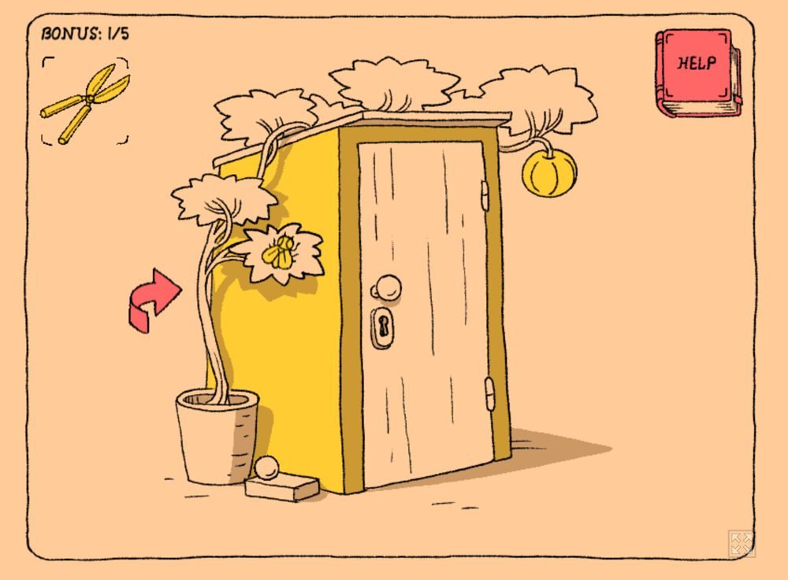

Moment 1: stuck, then the clippers
- Where was I?
- When I learned the clippers cut the pumpkin, because for a few seconds I was stuck.
- What I saw and heard
- A door, plants, a fly, clippers, a pumpkin, a red arrow, a cat. Ethereal sounds that told me I had done something right.
- What I did
- I clicked the fly and it flew to the top left. I clicked around for any feedback and got nothing, until I clicked the ball at the top and heard a new sound that felt like success. I went through the left red arrow to the back of the outdoor closet, sent the fly back, and clicked the cat, which moved toward it. A box in the bottom right gave me clippers. At the front again, I clipped the pumpkin, it fell, and a hidden key was there. The key opens the door, where Luig is, and clicking him wins the level.
- What changed
- The angle of the scene changed, and the fly, cat, and pumpkin moved around.
- What seemed possible
- That if I kept clicking, I would figure it out.
- What I understood
- How to get the key to find Luig.